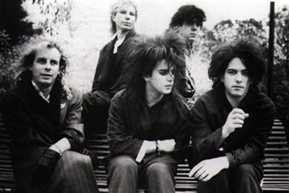
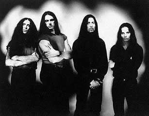

Em 1976, Joey Ramone cantava
que já não se importava nem com este mundo
nem com aquela garota. I Don’t Care era uma
letra minimalista cantada melancolicamente sobre acordes
furiosos. O desalento punk dos Ramones era sinal de que
há algum tempo parte dos adolescentes já não
via o mundo de uma forma colorida e otimista. A canção
jovem precisava expressar essas novas percepções
do mundo. E ela fez isso de diferentes maneiras. O movimento
dark ou gótico foi uma delas.
O rock gótico foi
um dos primeiros filhotes do punk no final dos anos 70.
Numa época em que a disco music festiva
e descompromissada dominava as paradas de sucesso, uma vertente
do rock com canções introspectivas, letras
que expressavam angústias e uma visão sombria
da sociedade e trágica dos relacionamentos amorosos
surgiu no Reino Unido. Bandas como Siouxsie and the
Banshees e Bauhaus
misturaram efeitos eletrônicos, uma repetitiva e onipresente
bateria e vocais dramáticos para cantar sua visão
pessimista do mundo.
Muitos
críticos consideram o lançamento do disco
Bela Lugosi’s Dead, do Bauhaus, em 1979,
o marco inicial do rock gótico. O estilo logo ganhou
adeptos e nos anos 80 despontaram bandas como The Jesus
and Mary Chain, The Sisters of Mercy e aquela
que é considerada uma das mais expressivas e bem-sucedidas
do gênero, o The
Cure, apesar do grupo ter uma produção
musical que vai bem além do estilo.
As principais características
do rock gótico surgiram logo nos primeiros dias do
punk britânico, inspiradas no "faça você
mesmo", no niilismo e na agressividade visual e sonora
preconizados pelo punk. Só que com uma predileção
por temas que misturam obsessão pela morte, romantismo
macabro e sadomasoquismo. Parte das raízes do rock
gótico estava também no glam rock dos anos
70, de David Bowie e Roxy Music, e no
rock alternativo de Nova Iorque do final dos anos 60, como
o do Velvet Underground. Visualmente, roupas pretas,
muitas de couro no mesmo estilo sadomasoquista do punk,
e maquiagens faciais de aspecto fúnebre identificavam
os admiradores do gótico.
Várias culturas e
movimentos artísticos influenciaram o fenômeno.
Uma das mais importantes foi a tradição literária
do Romantismo do "mal do século" que teve
seu expoente com Lord
Byron, mais de uma centena de anos antes na Inglaterra.
Também elementos das antigas culturas egípcia
e celta, da mitologia cristã, do surrealismo e do
dadaísmo, citações de perversidades
sexuais e de histórias de vampiros, futurismos cibernéticos
e a filosofia de Nietzsche compuseram uma colagem de referências
presentes nas canções góticas.
O
gótico emplacou diversos sucessos que viraram clássicos
da cultura pop como Lullaby e Lovesong,
do The Cure, e Christine, de Siouxsie and the Banshees.
As influências da atmosfera do dark estão presentes
também em canções clássicas
de bandas que não pertenciam ao movimento como em
She Lost Control, do Joy
Division, ou Suffer Little Children, dos Smiths.
A herança gótica avançou pela década
de 90 influenciando bandas como Type
O Negative e Nine Inch Nails, entre outras.
A cena gótica se diluiu
na virada dos anos 80 para os 90, mas os sentimentos de
rejeição, solidão e desilusão
que atingem parte dos adolescentes não. E a música
pop continuou a tê-los como temas principais em movimentos
como o grunge e as canções de Nirvana,
Pearl Jam e companhia. Mas, apesar de tocar nos
mesmos problemas, o grunge não agradava a uma parcela
da juventude que tinha mais afinidade com os valores e a
visão do mundo que o rock gótico trazia.
A subcultura
gótica foi um caminho que muitos jovens com uma
sensibilidade mais romântica encontraram para lidar
com as dificuldades emocionais da adolescência, com
a crescente complexidade do mundo a sua volta e com a percepção
negativa do futuro. Enquanto esses fatores, que podem ter
contribuído para o sucesso do gótico como
uma das mais duradouras subculturas jovens, persistirem,
uma parte dos jovens buscará na cultura pop canções
que expressem essa sensação de desalento e
que de alguma forma os ajudem a se sentir menos sozinhos.
Por Sílvio
Anaz
Extraído
e adaptado de www.hsw.uol.com.br